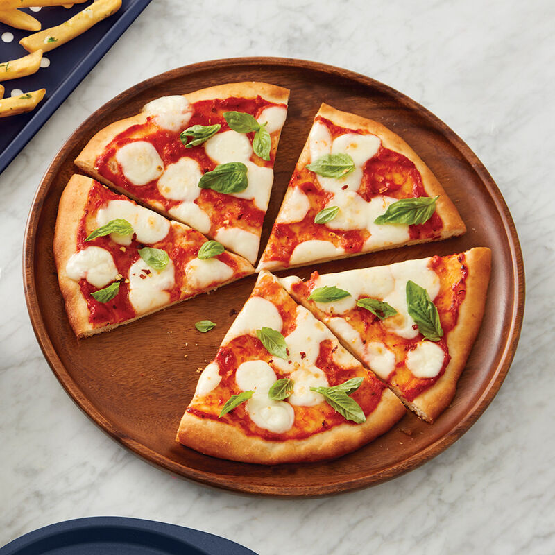

Pizza

Margarita Pizza
Is a dish of italian origin consisting of a usually round,
flat base of leavened wheat-based topped with tomatoes, cheese, and often various other ingredient
such as (anchovies, meat, onions, olives, etc), which is then baked at a high temperature, tradionally
in wood-fired oven. A small pizza is sometimes called a pizzetta.
A person who makes pizza is known as a pizzaiolo.
Ingredients
- Cheese
- Mozzarella
- Tomato
- Basil
- Tomato sauce
- Pizza Dough
- Olive Oil
- Flour
- Salt
Steps
- Make the base: Put the flour into a large bowl, stir in the yeast and salt.
Make a well, pour in 200ml warm water and the olive oil a
nd bring together
with a wooden spoon until you have soft, fairly wet dough. Turn onto a
lightly floured surface and knead for 5 mins until smooth.
- Cover with a tea towel and set aside. You can leave the dough to rise if
you like, but it's not essential f
or a thin crust.
- Make the sauce: Mix the passata, basil and crushed garlic together, then
season to taste. Leave to stand at room temperature while you get on with
shaping the base.
- Roll out the dough: If you've let the dough rise, give it a quick knead,
then
split into two balls
- On a floured surface, roll out the dough into large rounds, about 25cm
across, using a rolling pin. The dough needs to be very thin as it will rise in
the oven. Lift the rounds onto two floured baking sheets.
- Top and bake: Hea
t oven to 240C/fan 220C /gas 8
- Put another baking sheet or an upturned baking tray in the oven on the
top shelf.
- Smooth sauce over bases with the back of a spoon. Scatter with cheese
and tomatoes, drizzle with olive oil and season.
- Put one pizza, still
on its baking sheet, on top of the preheated sheet or
tray.
- Bake for 8-10 mins until crisp. Serve with a little more olive oil, and basil
leaves if using. Repeat step for remaining pizza
.